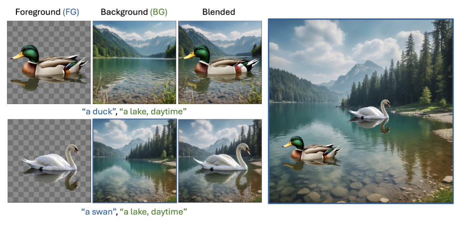
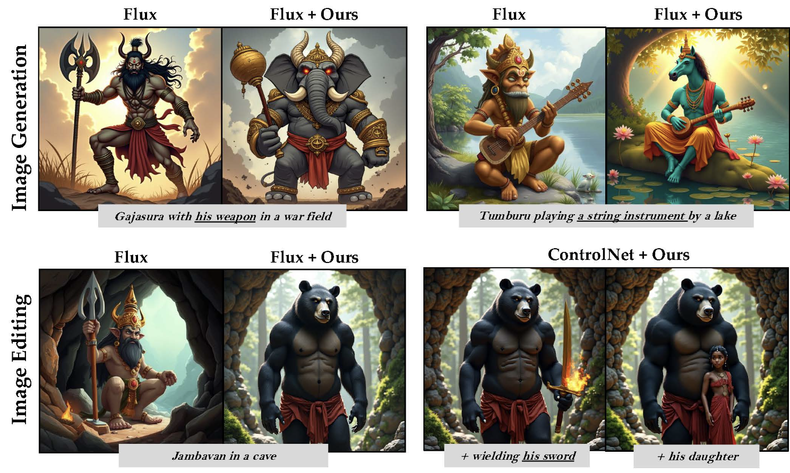
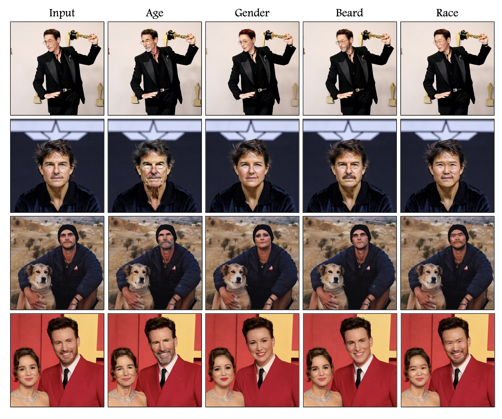
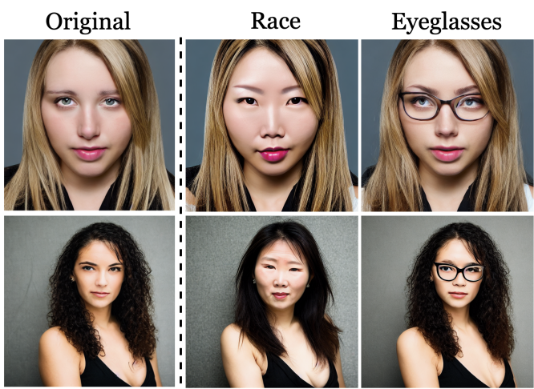
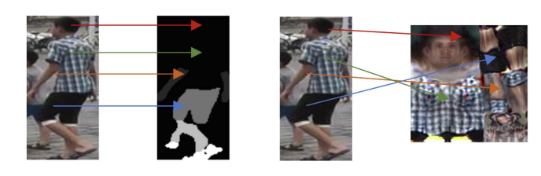
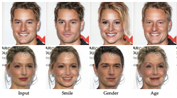
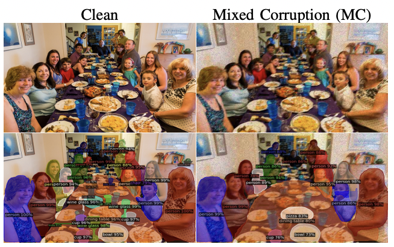
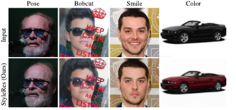
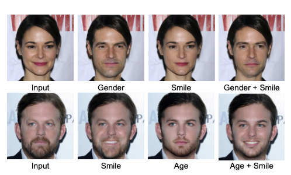

Publications

Canvas-to-Image: Compositional Image Generation with Multimodal Controls
SIGGRAPH 2026

LoRAShop: Training-Free Multi-Concept Image Generation and Editing with Rectified Flow Transformers
NeurIPS 2025 Spotlight · Top 3%

FluxSpace: Disentangled Semantic Editing in Rectified Flow Transformers
CVPR 2025

NoiseCLR: A Contrastive Learning Approach for Unsupervised Discovery of Interpretable Directions in Diffusion Models
CVPR 2024 Oral · Top 0.8%

LayerFusion: Harmonized Multi-Layer Text-to-Image Generation with Generative Priors
CVPR Findings 2026

Context Canvas: Enhancing Text-to-Image Diffusion Models with Knowledge Graph-Based RAG
arXiv 2024

GANTASTIC: GAN-based Transfer of Interpretable Directions for Disentangled Image Editing in Text-to-Image Diffusion Models
NeurIPS 2025 Workshop (GenProCC)

The Curious Case of End Token: A Zero-Shot Disentangled Image Editing using CLIP
CVPR 2024 Workshop (AI4CC)


Image-to-Image Translation With Disentangled Latent Vectors for Face Editing
TPAMI 2024


StyleRes: Transforming the Residuals for Real Image Editing With StyleGAN
CVPR 2023

VecGAN: Image-to-Image Translation with Interpretable Latent Directions
ECCV 2022